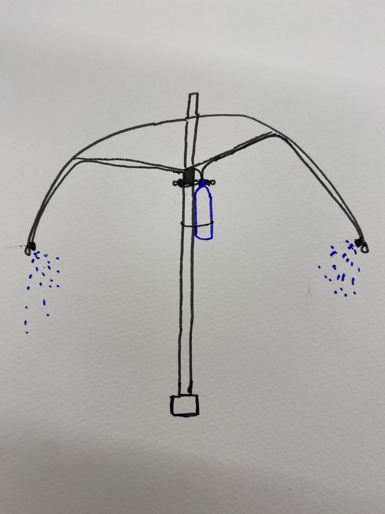
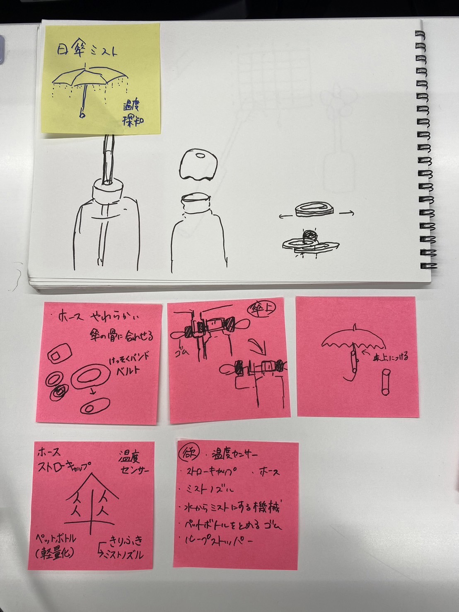
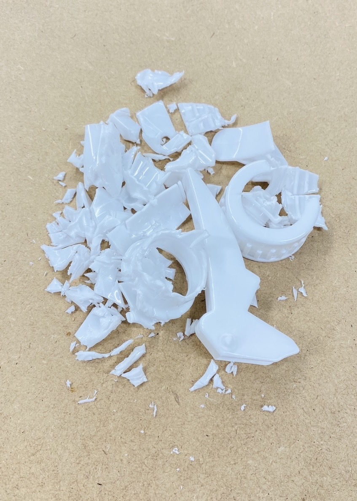
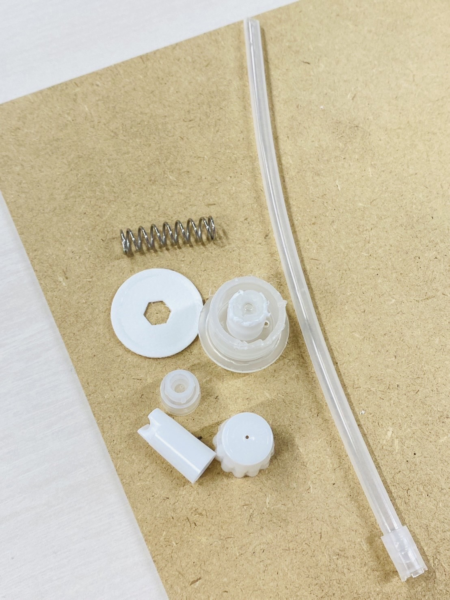
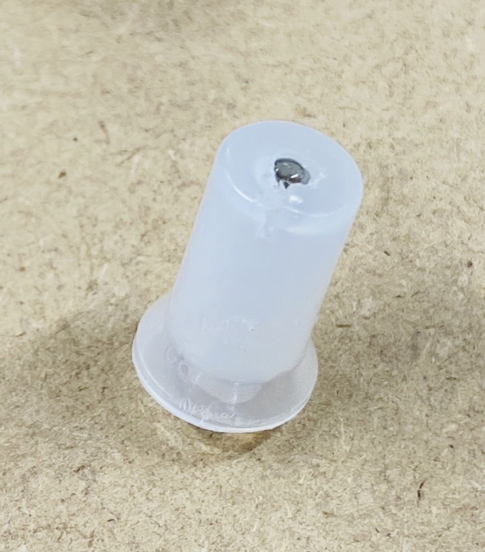
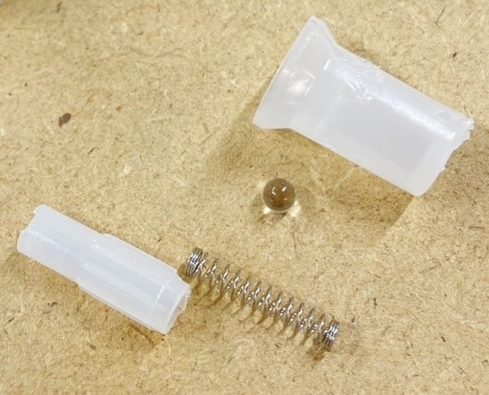
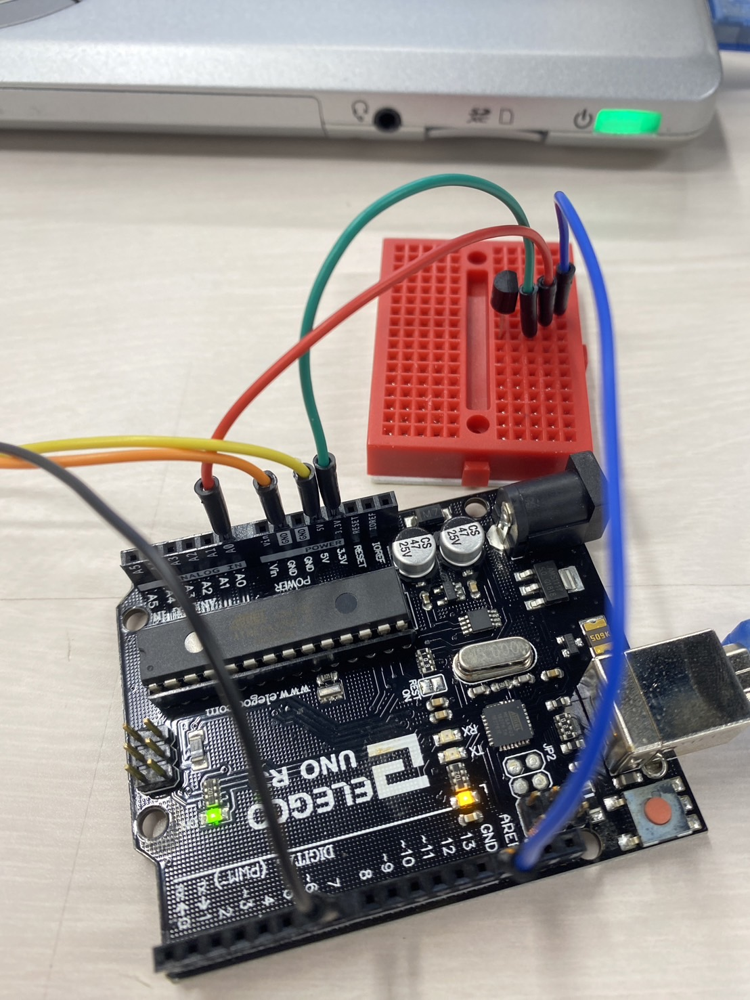

プロジェクトノート
メンバー：
・
miyayui
・
ツナ
・
HANA
・ayana-7
ミスト付き日傘
Image

概要
暑い日に日傘をさしたら蒸し暑い…。ミストつけたら涼しそう！
ずっとボタン押してつけるの面倒…。気温を感知して自動でミスト出てくれたら楽そう！
プロセスメモ
■⇒考えること、疑問点など
●⇒具体的なやること
▶⇒やったこと
2024/05/27

■プログラミング（気温を検知し、対象の気温に達したらミストを出すシステムづくり）
＜外観＞
■ペットボトルのつけ方
●傘を広げたときに骨に密着するように(上部に取り付ける)、畳んだ時にはずせるようにする(ペットボトルのみを簡単にはずす方法)
＜動作＞
■水からミストにする、水の引き上げ方法
●ミストにする機械の購入
2024/06/03
＜フィールドワーク＞
■需要はあるのか
●実際に日傘の使用者数を調査する
▶結果：日傘をさしている人は42人だった。
この日は日差しも強く、最高気温は２４℃近くであった。(tenki.jpの横浜の天気より)
２４℃で42人もの人が利用していることから、今後は地球温暖化の影響もあるため需要はさらに上がると考えられた。
＜購入＞
■必要なものが実際に手に入って形にできるのか
●物理的に必要なものの購入
▶ミストの噴射口となるものの購入
2024/06/10
■ミストにする必要なものを考える
●ミストノズルの構造を理解する
▶ミストノズルの構造を理解するために分解。中にある小さな部品を取り出した。
やってみて分かったのは、空気で押し出していることと、プラスチックは固いこと。
また、空洞を作っているだけで吹き出し口付近ではホースは使っていなかったこと。
透明なビーズが備わっていたこと(２つ)。
直接まっすぐ出ているのではなく、二段階で出ていること(水の吸い上げと吹き出しで違う？！)




＜購入＞
▶手動でなく、電動でやりたいため、ミスト作成に適応するモジュールの購入をした。
購入品：モジュール・耐熱電子ワイヤー・温度センサー
2024/06/17
▶ホースの購入
▶温度センサーが気温を感知するプログラムの書き込み・起動成功
▶水を引き上げるためにプロペラを作成
▶ミスト噴射機の起動に成功(PCへのプログラムの書き込みは不可能)
▶＋－コードを切断し、電線ワイヤーを介して繋げて起動することは成功
▶先生の助言を経てスイッチを取り除いた(はんだごてで取り除けず、ニッパーで切って取り除いた)
■スイッチをリレーに変更し、常にオンの状態に保つ。
そこから温度センサーの制御と繋げ、起動する方法を考える。
■水の引き上げがプロペラでできるのかを試行
2024/06/24
▶取り除いたスイッチ部分に導線をあて、電力がどこを通っているか確認し、はんだで導線を取り付けた
▶取り付けた導線にリレー回路を通してミスト作動の制御を可能にした(ex:５秒間隔で作動)
▶温度センサーとリレー回路の配線を確認した(リレー回路で５Ｖ使ったから温度センサーの方は3.3Ｖで可能であることを確認した)

▶プロペラをステッピングモーターで起動成功
2024/07/01
▶温度センサーによるリレー回路の制御をすることに成功(27℃以上で起動、27.0℃では起動しない)
▶ミストモジュールを実際に日傘に配線
●水を引き上げて、ミスト変換機まで水が届くかの配線を作成する
使用したもの
温度センサー
日傘
ペットボトル
ミストモジュール
電子ワイヤー
ホース
3Dプリンタで作成したプロペラ
リレー回路
ステッピングモーター
アルディーノ
完成品
紹介動画